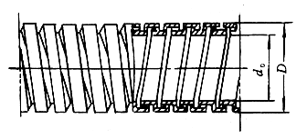
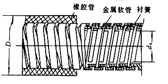
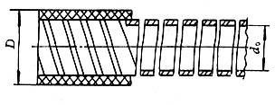
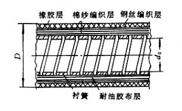
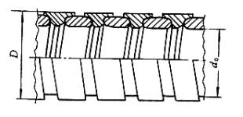

|
类型 |
结 构 简 图 |
软 管 主 要 尺 寸/mm |
特 点 |
|||
|
软轴直径d |
软管内径d0 |
软管外径D |
最小弯曲 半径Rmin |
|||
|
金 属 软 管 |
 |
13 16 19 |
20±0.5 25±0.5 32±0.5 |
25±0.5 32±0.5 38±0.5 |
270 300 375 |
由镀锌的低碳钢带卷成，钢带镶口内填以石棉或棉纱绳。结构较简单，重量轻。外径小，但强度和耐磨性较差 |
|
橡 胶 金 属 软 管 |
 |
13 |
19±0.5 21±0.5 |
36（+1,0） 40（+1,0） |
300 325 |
在上一种软管内衬以衬簧，外面包上橡校保护层。耐磨性及密封性均较上一种好 |
|
衬 簧 橡 胶 软 管 |
 |
8 10 13 16 |
14（+0.5,0） 16（+0.5,0） 20（+0.5,0） 24（+0.5,0） |
22（+1,0） 30（+1,0） 36（+1,0） 40（+1,0） |
225 320 360 400 |
在橡胶管内衬以衬簧，比上一种结构简单。混凝土振动器多用此种软管 |
|
衬 簧 编 织 软 管 |
 |
13 |
20（+0.5,0） |
36（+1,0） |
360 |
衬簧由弹簧钢带卷成，外面依次包上耐油胶布层，棉纱、钢丝编织层和耐磨橡胶。强度、挠度、耐磨性、密封性均较好 |
|
小 金 属 软 管 |
 |
3.3 5 |
5.5±0.1 8±0.2 |
8±0.1 10.5±0.2 |
150 175 |
由两层成型钢带卷成，挠性较好，密封性较差 用于控制型软轴 |
注：1．由于目前尚未有软管统一标准，各厂家生产的规格尺寸不尽相同，设计选用时应以各厂的产品样本为准。表中所列仅是部分产品规格。
2．括号中逗号前后分别表示上偏差和下偏差。